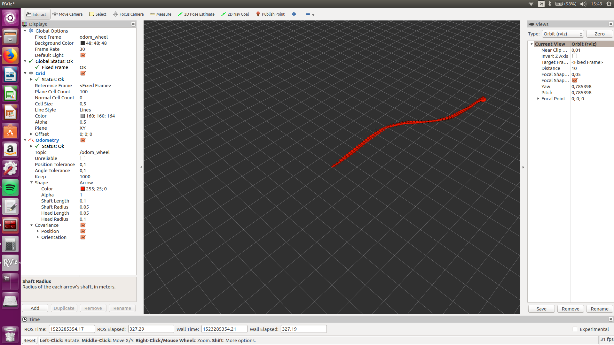
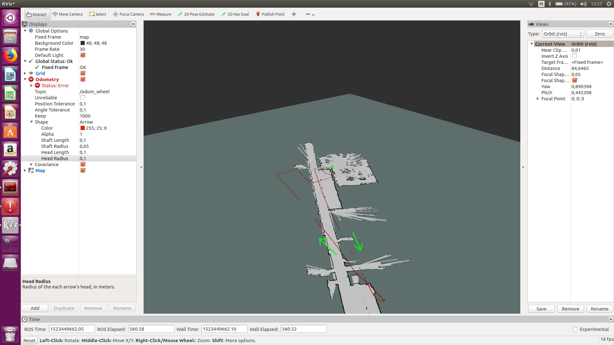
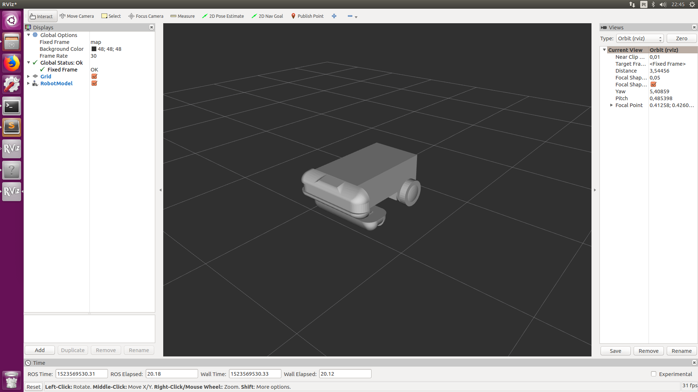

Como tinha sido proposto nas semanas anteriores foi alterado o código do arduino para obter valores negativos quando as rodas se deslocam para trás. Também foram alterados os parâmetros das dimensões do robô. Estas alterações permitiram obter resultados positivos quando o robô realiza um percurso definido, inverte o sentido de marcha e realiza o mesmo percurso no sentido contrário. A imagem a baixo permite observar os resultados.
De seguida comecei a familiarizar-me com o URDF, que permite fazer uma descrição detalhada do robô. Estes conhecimentos permitiram sobrepor a odometria e o Hector Slam no mesmo RVIZ, mesmo sem a descrição completa do robô. Os resultados podem ser observados na imagem a baixo.
O movimento iniciou-se no local indicado com um ponto verde, e foi realizado no sentido indicado pelas setas. Como é possível observar, o movimento do robô ao longo do corredor, indicado pela hodometria, está deslocado alguns graus relativamente ao que é indicado pelo Hector Slam. No fim do corredor este erro representa uma diferença de vários metros. Este erro é normal na hodometria, uma vez que os erros são acumulativos. No entanto podemos verificar que o trajeto de ida, indicado pela hodometria, é distinto do trajeto de volta. Isto poderá indicar um erro associado à geometria definida para o robô ou que a taxa de dados é insuficiente. Pode-se tentar verificar qual é o problema realizando o mesmo trajeto a velocidades diferentes. Se o erro for idêntico a velocidades diferentes a origem do erro provavelmente não está associada à taxa de envio de dados.
Uma vez que existem ficheiros CAD do robuter é possível criar o URDF do robô e representá-lo graficamente em RVIZ. Este processo foi iniciado mas ainda não foi terminado. A imagem a baixo permite observar o estado em que se encontra o URDF.
